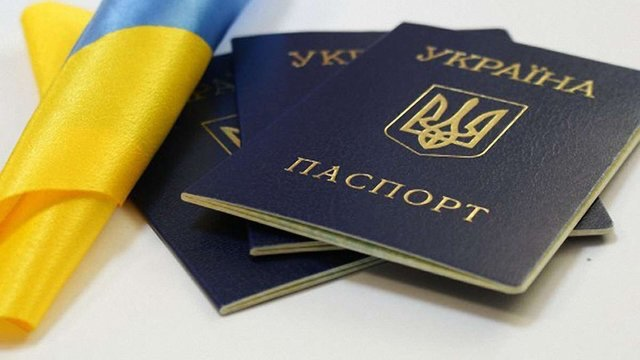
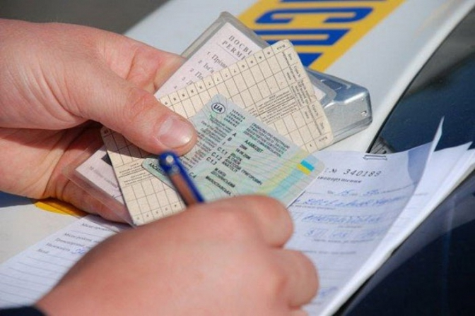

Що робити з документами, у яких закінчився термін дії
Посвідчення водія, документи на перевезення небезпечних вантажів, свідоцтва про реєстрацію.
Посвідчення водія, свідоцтво про реєстрацію термін дії яких закінчився в період воєнного стану, продовжують діяти на всій території України. Тож змінювати права або документи на авто у час воєнного стану не потрібно. Аби забезпечити безперебійні перевезення палива у місця нагальної потреби під час дії воєнного стану продовжено термін дії ДОПНВ-свідоцтв. Вони будуть чинними також протягом дев’яноста днів з дня скасування воєнного стану в Україні.
Якщо вас оштрафують за прострочений документ, ви можете подати на цю людину в суд.
Паспорт громадянина України у формі ID-картки або книжечки.
Змінювати паспорт громадянина України у час воєнного стану не потрібно. На період дії воєнного стану в Україні для посвідчення особи, підтвердження громадянства України ви можете пред’являти паспорт: термін дії якого закінчився; до якого своєчасно не вклеєна фотокартка як документа, що посвідчує особу.
Паспорт громадянина України для виїзду закордон.
Урядом України прийнято постанову, яка надає можливість продовжувати термін дії закордонного паспорта терміном на 5 років та вносити інформацію про дитину віком від народження до 18 років до закордонних паспортів батьків/законних представників. Ця інформація посвідчує їхню особу та підтверджує громадянство України. Послуга надається безоплатно у день звернення в територіальні органи/територіальні підрозділи Державної міграційної службах, посольствах або консульських установи України, за місцем звернення.
Для іноземців та осіб без громадянства: вид на постійне проживання в Україні; дозвіл на тимчасове проживання в Україні; посвідчення біженця; посвідчення особи, яка потребує додаткового захисту.
Дані документи, терміни дії яких закінчився, або в які вчасно не вклеєні фото, залишаються дійсними для підтвердження особи.
Iнформація стосується як паперових, так і електронних документів. Протерміновані документи можна буде замінити після скасування воєнного стану в країні і поновлення послуг для громадян у сервісних центрах МВС.
З моменту оголошення воєнного стану органи ДМС зупинили надання адміністративних послуг, але 15 березня на своїх офіційних сторінках ДМС повідомила про відновлення роботи у безпечних районах України з оформлення ID-карток, закордонного паспорта громадянина України, посвідок на постійне та тимчасове проживання. Дізнатися про графік роботи необхідних органів ДМС можна тут.
